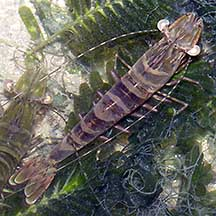
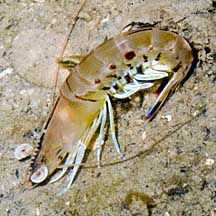
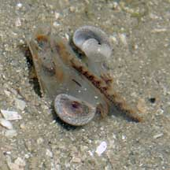

|
|
| shrimps text index | photo index |
| Phylum Arthropoda > Subphylum Crustacea > Class Malacostraca > Order Decapoda > prawns and shrimps |
| Penaeid
prawns Family Penaeidae updated Feb 2020 Where seen? These large prawns are commonly seen on many of our shores, usually in sandy, silty areas and near seagrasses. They are more active at night, during the day hiding in the sand. Features: Generally about 5-8cm long. Prawns of the Family Penaeidae have a well developed raised portion along the centre of the heads extending between the eyes called the rostrum. The rostrum usually has 'teeth' both on the upper side (dorsal) and underside (ventral). The eyes are huge. Antennae very long, often longer than the body. Walking legs 5 pairs, all well developed, the first 3 pairs tipped with tiny claws. 5pairs of paddle-shaped swimming limbs (pleopods) used to slowly swim with. A shrimp escapes rapidly with quick contractions of its flexible and muscular abdomen and broad fan-shaped tail. Those of the genus Penaeus have large pointed 'teeth' on the rostrum. These include the popular 'Tiger prawns' probably so-named for the banded patterns on their bodies. But these prawns may also be green or grey. The Black tiger prawn (Penaeus monodon) has a well-developed rostrum armed with 7 or 8 upper (dorsal) teeth and 3 ventral teeth. Depending on ground, what they eat and how murky the water is, body colours vary from green, brown, red, grey, blue. With bands alternating blue or black and yellow. Pleopods brown to blue pleopods with reddish fringing hairs. Grows to 30cm and weighing 130g, females larger. It is also called the Giant tiger prawn and Asian tiger prawn. The Green tiger prawn (Penaeus semisulcatus) has a more or less straight rostrum armed with 7 or 8 upper (dorsal) teeth and 3 ventral teeth. Antennae with white and red bands. Grows to 18-22cm and weighing 130g, females larger. Parapenaeopsis species are 12-17cm long prawns that live in deeper water 10 to 90m. Metapenaeopsis species lack obvious 'teeth' and can grow to 7-20cm long. They may be found from the intertidal to deeper waters 4-90m. Baby prawns: Young Black tiger prawns live in mangroves and estuarine areas. Young Green tiger prawns settle in seagrass meadows. Adults move to deeper waters 20-50m. Adults mate and lay eggs in deeper waters. Human uses: The larger prawns are important commercially. Tiger prawns are widely aquacultured and often raised unsustainably. More about the impact of prawn farming. |
 Chek Jawa, Jul 05 |
 Like other shrimps, it contracts its abdomen to quickly swim backwards. Sentosa, Jun 07 |
 Some hide in the sand with only the 'nose' and eyes sticking out. Chek Jawa, Jul 03 |
| Some Penaeid prawns on Singapore shores |
|
|
|
| Family
Penaeidae recorded for Singapore from Wee Y.C. and Peter K. L. Ng. 1994. A First Look at Biodiversity in Singapore. ^from T. Upanoi. The penaid prawns of the Straits of Johor: Preliminary results. *from Tan, Leo W. H. & Ng, Peter K. L., 1988, A Guide to Seashore Life. **from WORMS
|
Links
|